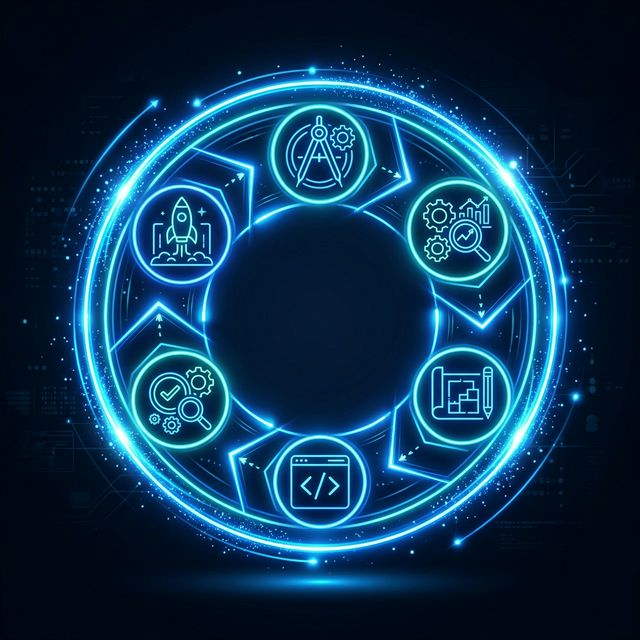
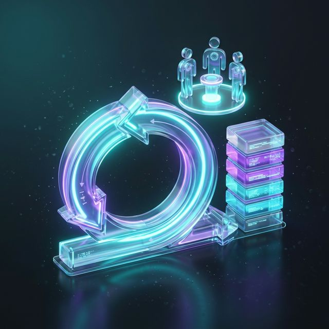

🚀 Introducción al SDLC
El Ciclo de Vida de Desarrollo de Software (SDLC) es el proceso estructurado utilizado por los equipos de ingeniería para diseñar, desarrollar y probar software de alta calidad.

El objetivo no solo es escribir código, sino garantizar que la solución cumpla con los requisitos del usuario, sea mantenible y se entregue en plazo.
🏛️ Modelos Tradicionales (Plan-driven)
Estos modelos enfatizan la planificación exhaustiva y el control riguroso antes de iniciar el desarrollo.
Cascada (Waterfall)
Lineal y secuencial. Cada fase debe completarse antes de pasar a la siguiente. Ideal para proyectos con requisitos fijos.
📄 Ver DiagramaModelo en V
Asocia cada fase de desarrollo con una fase de prueba correspondiente. Garantiza la calidad desde el inicio.
📄 Ver DiagramaEspiral
Modelo evolutivo que pone énfasis en el Análisis de Riesgos en cada iteración.
📄 Ver Diagrama⚡ La Revolución Ágil
Aparece como respuesta a la rigidez de los modelos tradicionales, priorizando la entrega temprana y la adaptación al cambio.

Valores Ágiles
- Individuos e interacciones sobre procesos.
- Software funcionando sobre documentación.
- Colaboración sobre negociación.
- Respuesta al cambio sobre seguir un plan.
Scrum
Marco de trabajo basado en Sprints (1-4 semanas), con roles definidos (PO, Scrum Master, Team) y ceremonias claras.
📺 Ejemplo Práctico de Metodologías Ágiles
🎮 Agile SDLC Explorer
Interactúa con el ciclo de vida. Mueve un requerimiento a través de las fases de un Sprint Ágil.
Ticket: #402
Requerimiento: Implementar Chat en Vivo
Selecciona 'Avanzar' para comenzar el ciclo.
🛠️ Simulador de Toma de Decisiones Técnicas
Pon a prueba tu criterio experto. Lee el contexto de cada proyecto y selecciona el ciclo de vida más adecuado.
📼 Quiz: Conceptos del Video "Qué es la Metodología Ágil"
Pon a prueba tus conocimientos sobre los conceptos clave explicados en el video ('Desarrollo de software en 5 minutos'). Responde progresivamente para descubrir tu resultado final.